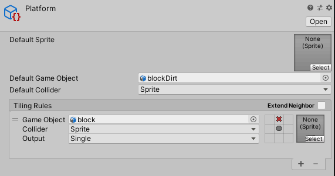
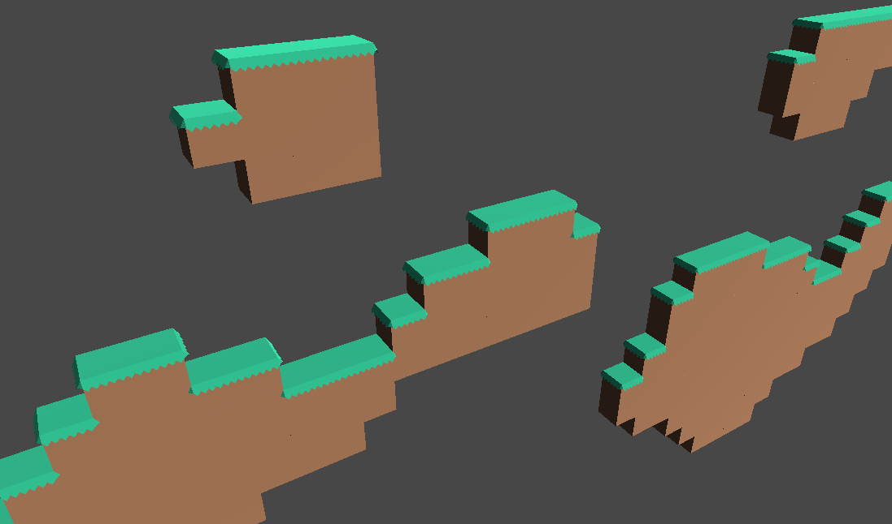
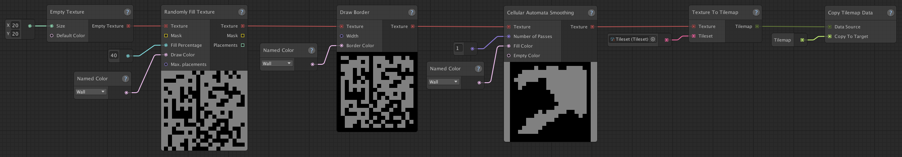
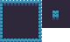
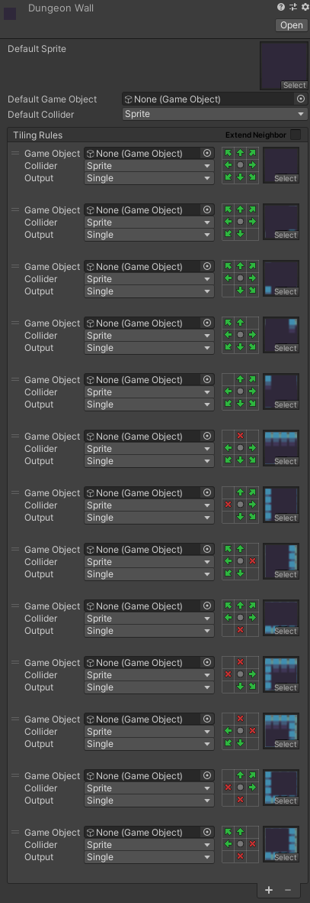
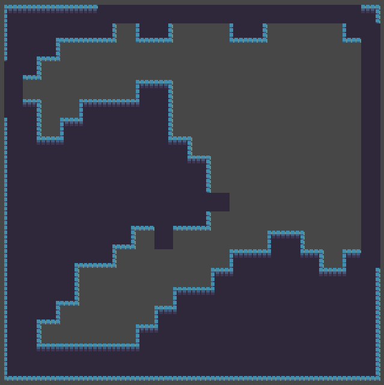
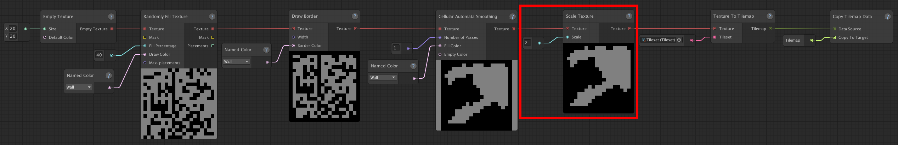
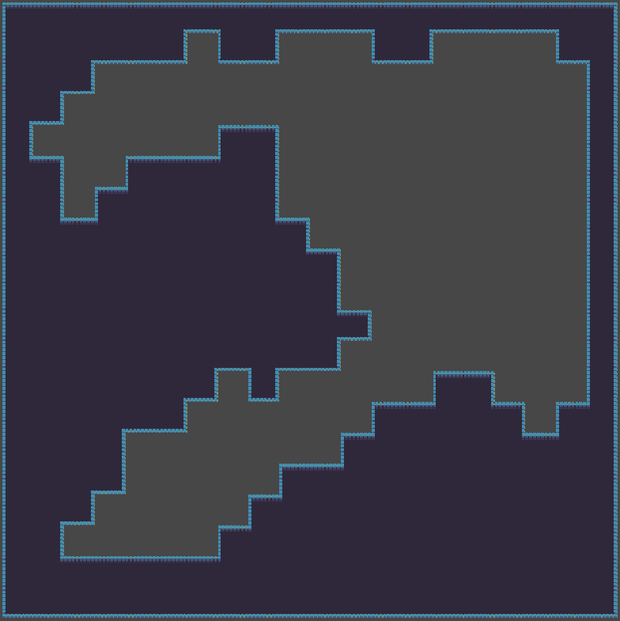

Tips for rule tiles
Rule tiles are a part of Unity's 2D Tilemap Extras package. As it's a part of Unity and not of Map Graph itself, we won't be going into detail about what rule tiles are or how they work here. You can find this information here. Instead, this page contains tips on how you can utilize rule tiles in combination with Map Graph.
Once you're familiar with Rule Tiles, you can assign them to Map Graph's Tilesets in the same way as you would any other tile (as described in this section of the "Creating your first map generator" tutorial).
Using Rule Tiles to generate GameObjects
Tilemaps and rule tiles can also be used to generate (3D) game objects. Instead of assigning a sprite to the rules, you assign a game Object.
Let's look at this rule tile, for example: 
Its sprites are empty, instead it has a "Default Game Object" called "blockDirt" and a single rule, that matches for each tile that doesn't have another tile above it, with "Game Object" set to "block", which is a dirt block with some grass on top of it.
Using simple rule tile, we can generate platforms like these, consisting of 3D game objects. 
You don't need to use rules, if you simply want to use this system to place game objects instead of tiles. In this case, you'd just assign a "Default Game Object" and leave the list of rules empty.
How to deal with an "incomplete" spritesheet
Spritesheets, and thus the rule tiles you create from them, are rarely complete. This means that they don't have a sprite for every possible situation. Most often it will be missing sprites for parts that are only one tile wide or tall.
This can be problematic as Map Graph doesn't have any knowledge of the rule tiles you're using and therefore cannot avoid the situations for which there are no sprites available. This is by design, as Map Graph shouldn't have any knowledge of the concrete method of output, right up until the point the output is generated. This is to keep Map Graph flexible and easily extendable to generate all kinds of output, whether the output is a tilemap or a bunch of gameobjects or something else entirely.
In some cases, the best solution is to add the missing sprites to your spritesheet, but this can be a lot of work, especially if those sprites don't exist yet. However, in a lot of cases, there's another solution possible.
For example, let's create a simple cave generator using this graph:

A cave-like map generator, using the cellular automata method. A border is added to make sure that the level is closed.
The resulting texture gets converted to a tilemap and copied onto a tilemap into our scene.
And let's use this (incomplete) spritesheet: (Original spritesheet can be found here.)

To create this rule tile:

Now let's see what happens when we look at the output:

Whoops, that doesn't look too great. Some of tiles don't match up with their neighbours, because the sprite that's required for it to match up doesn't exist in in our spritesheet, so the default one is used instead.
To solve this, you can either add all the possible sprites to your spritesheet, which can be quite a lot of work if those don't exist yet, or you can make sure that these single tiles don't occur.
You can achieve the latter by using the Scale Texture node.
Let adjust our graph, by adding this node right before converting the texture to a tilemap. Setting the scale to 2 will increase the texture's width and height by 2, so any single tile will be scaled up into 4 tiles, eliminating any parts that are only a single tile wide or tall. Like so: 
Now let's take a look at the output again: 
Success! All the tiles now correctly match up with their neighbours.
One caveat is that your map is now 4 times the size. So you might want to start out with a smaller texture to compensate for this.
If you need the size of the scaled texture, you can get this by using the Texture Size node. This way you don't have to pass both the starting size and the eventual size as a parameter or constant.
Caveats
While this quite easy to work with, it has a downside, namely that the GameObjects are only available at runtime. They're visible in the scene, but not in the hierarchy until you enter playmode. This makes it hard to make modifications to the game objects outside of runtime, if that is something you need.